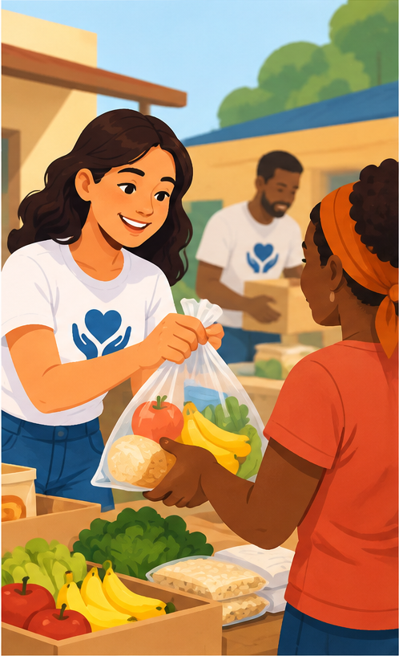
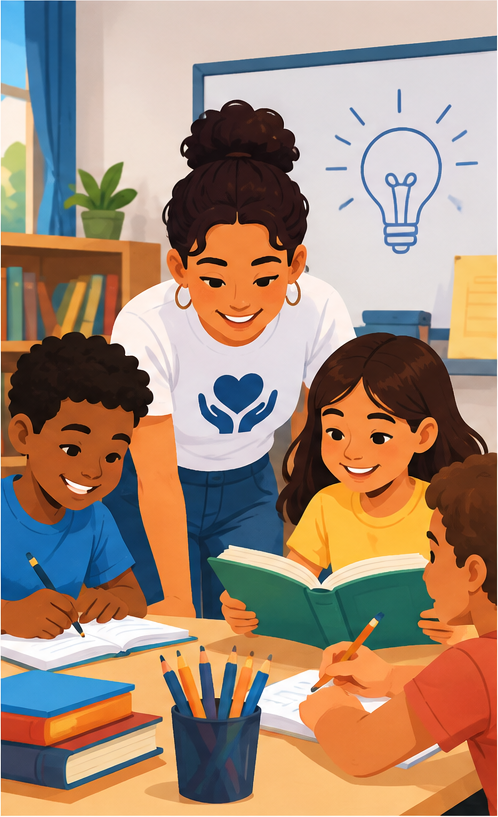
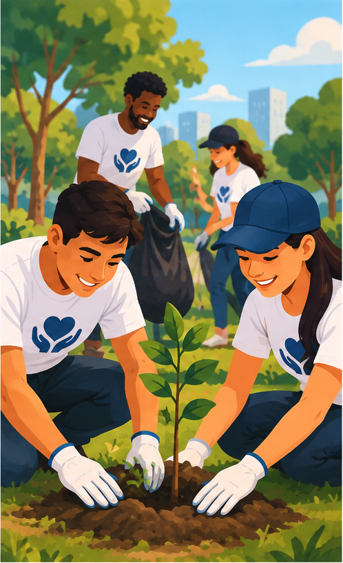

Conheça nossas iniciativas
Nossos projetos buscam transformar doações e trabalho voluntário em ações práticas para a comunidade.
Projetos sociais

Alimentação
Arrecadamos alimentos e montamos ações de apoio para famílias em situação de vulnerabilidade.

Educação
Promovemos oficinas e atividades educativas para incentivar o desenvolvimento da comunidade.

Voluntariado
Conectamos voluntários às atividades em que seus conhecimentos e seu tempo podem ajudar.
Campanhas de doação
As contribuições financeiras ajudam na compra de materiais, alimentos e recursos necessários para manter nossas ações.
Como contribuir: entre em contato pelo e-mail contato@maosquetransformam.org.
Voluntariado
Você pode colaborar oferecendo seu tempo, conhecimento ou participação nas ações da ONG.
Quero ser voluntário